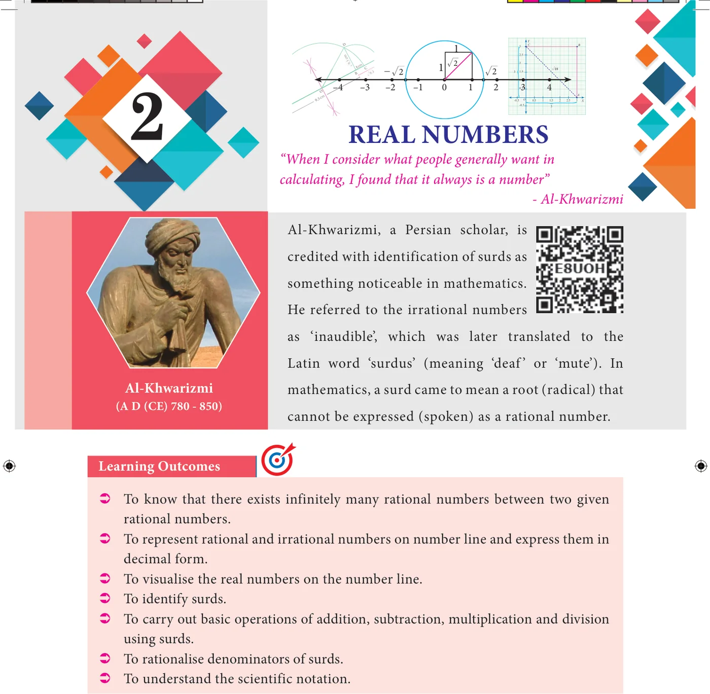
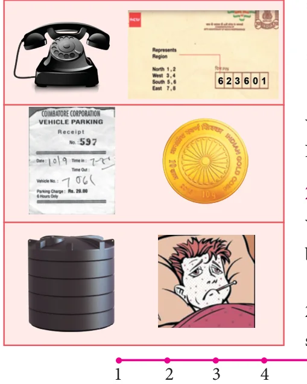

<!DOCTYPE html>
<html lang="en">
<head>
<meta charset="UTF-8">
<meta name="viewport" content="width=device-width,initial-scale=1">
<title>Chapter opener; 2.1 Introduction — Real Numbers</title>
<meta name="description" content="Class 9 Mathematics · Real Numbers · Chapter opener; 2.1 Introduction">
<link rel="icon" href="data:image/svg+xml,<svg xmlns='http://www.w3.org/2000/svg' viewBox='0 0 100 100'><text y='.9em' font-size='90'>📘</text></svg>">
<link rel="stylesheet" href="../../../assets/book.css">
<link rel="stylesheet" href="https://cdn.jsdelivr.net/npm/katex@0.16.11/dist/katex.min.css" crossorigin="anonymous">
</head>
<body>
<header class="topbar">
<div class="topbar-in">
  <div class="crumb">
    <span class="c1"><a href="../../../index.html">Library</a> · <a href="../../index.html">Class 9 Mathematics</a></span>
    <span class="c2">Real Numbers · Chapter opener; 2.1 Introduction</span>
  </div>
  <a class="tb-btn" data-nav="prev" href="../../01-set-language/18-ict-corner/index.html" title="ICT Corner 1">←</a>
  <details class="drawer"><summary class="tb-btn" title="Sections in this chapter">☰</summary>
<div class="drawer-panel"><div class="dh">Real Numbers</div><a href="../01-chapter-opener/index.html" aria-current="page">Chapter opener; 2.1 Introduction</a><a href="../02-rational-numbers-2.2/index.html">2.2 Rational Numbers</a><a href="../03-exercise-2.1/index.html">Exercise 2.1</a><a href="../04-irrational-numbers-2.3/index.html">2.3 Irrational Numbers</a><a href="../05-exercise-2.2/index.html">Exercise 2.2</a><a href="../06-decimal-representation-to-identify-irrational-numbers-2.3.6/index.html">2.3.6 Decimal Representation to Identify Irrational Numbers</a><a href="../07-exercise-2.3/index.html">Exercise 2.3</a><a href="../08-real-numbers-2.4/index.html">2.4 Real Numbers</a><a href="../09-exercise-2.4/index.html">Exercise 2.4; 2.5 Radical Notation</a><a href="../10-exercise-2.5/index.html">Exercise 2.5</a><a href="../11-surds-2.6/index.html">2.6 Surds</a><a href="../12-exercise-2.6/index.html">Exercise 2.6</a><a href="../13-rationalisation-of-surds-2.7/index.html">2.7 Rationalisation of Surds</a><a href="../14-exercise-2.7/index.html">Exercise 2.7</a><a href="../15-scientific-notation-2.8/index.html">2.8 Scientific Notation</a><a href="../16-exercise-2.8/index.html">Exercise 2.8</a><a href="../17-exercise-2.9/index.html">Exercise 2.9</a><a href="../18-summary/index.html">Points to Remember</a><a href="../19-ict-corner/index.html">ICT Corner-1</a></div></details>
  <a class="tb-btn" data-nav="next" href="../../02-real-numbers/02-rational-numbers-2.2/index.html" title="2.2 Rational Numbers">→</a>
  <button class="tb-btn" data-theme-toggle title="Toggle light / dark" aria-label="Toggle light or dark theme">◐</button>
</div>
<div class="progress"><span style="width:13.2%"></span></div>
</header>
<main class="wrap">
<div class="sec-head">
  <p class="eyebrow"><a href="../index.html">Chapter 2 · Real Numbers</a></p>
  <h1>Chapter opener; 2.1 Introduction</h1>
  <p class="sec-meta">Textbook pages 1–2 · 2 figures</p>
</div>
<article class="prose">
<figure class="fig table-fig wide"></figure>
<h2 id="s-2-1-introduction">2.1 Introduction</h2>
<p>Numbers, numbers, everywhere! Â Do you have a phone at home? How many digits does its dial have? Â What is the Pincode of your locality? How is it useful? Â When you park a vehicle, do you get a ‘token’? What is its purpose? Â Have you handled 24 ‘carat’ gold? How do you decide its purity? Â How high is the ‘power’ of your spectacles?</p>
<figure class="fig"></figure>
<p>� How much water does the overhead tank in  your house can hold? � Does your friend have fever? What is his  body temperature?</p>
<p>You have learnt about many types of numbers so far. Now is the time to extend the ideas further.</p>
<h2 id="s-rational-numbers">Rational Numbers</h2>
<p>When you want to count the number of books in your cupboard, you start with 1, 2, 3, … and so on. These counting numbers 1, 2, 3, … , are called Natural numbers. You know to show these numbers on a line (see Fig. 2.1).</p>
<p class="caption">Fig. 2.1</p>
<p>We use N to denote the set of all Natural numbers.</p>
<div class="mathblock"><p>\(N =\) { 1, 2, 3, … }</p></div>
<p>If the cupboard is empty (since no books are there). To denote such a situation we use the symbol 0. Including zero as a digit you can now consider the numbers 0, 1, 2, 3, … and call them Whole numbers. With this additional entity, the number line will look as shown below</p>
<p class="caption">Fig. 2.2</p>
<p>We use W to denote the set of all Whole numbers.</p>
<div class="mathblock"><p>\(W =\) { 0, 1, 2, 3, … }</p></div>
<p>Certain conventions lead to more varieties of numbers. Let us agree that certain conventions may be thought of as “positive” denoted by a ‘+’ sign. A thing that is ‘up’ or ‘forward’ or ‘more’ or ‘increasing’ is positive; and anything that is ‘down’ or ‘backward’ or ‘less’ or ‘decreasing’ is “negative” denoted by a ‘ - ’ sign.</p>
<p>You can treat natural numbers as positive numbers and rename them as positive integers; thereby you have enabled the entry of negative integers \(- 1\), \(- 2\), \(- 3\), … . Note that \(- 2\) is “more negative” than \(- 1\). Therefore, among \(- 1\) and \(- 2\), you find that \(- 2\) is smaller and \(- 1\) is bigger. Are \(- 2\) and \(- 1\) smaller or greater than \(- 3\)? Think about it. The number line at this stage may be given as follows:</p>
<p>\(- 4 - 3 - 2 - 1 0 1 2 3 4\)</p>
<p class="caption">Fig. 2.3</p>
</article>
<nav class="pager"><a class="" data-nav="prev" href="../../01-set-language/18-ict-corner/index.html"><span class="dir">← Previous</span><span class="t">ICT Corner 1</span><span class="ch">Set Language</span></a><a class="nx" data-nav="next" href="../../02-real-numbers/02-rational-numbers-2.2/index.html"><span class="dir">Next →</span><span class="t">2.2 Rational Numbers</span><span class="ch">Real Numbers</span></a></nav>
</main><footer class="site">Generated from the source textbook PDFs · text, figures and exercises belong to their respective publishers.</footer><script defer src="https://cdn.jsdelivr.net/npm/katex@0.16.11/dist/katex.min.js" crossorigin="anonymous"></script>
<script defer src="https://cdn.jsdelivr.net/npm/katex@0.16.11/dist/contrib/auto-render.min.js" crossorigin="anonymous"
  onload="renderMathInElement(document.body,{delimiters:[
    {left:'\\(',right:'\\)',display:false},
    {left:'$$',right:'$$',display:true},
    {left:'\\[',right:'\\]',display:true}],throwOnError:false,ignoredTags:['script','noscript','style','textarea','pre','code']})"></script>
<script src="../../../assets/book.js"></script>
<script defer src="../../../../assets/search.js"></script>
<script defer src="../../../../assets/screenshot.js"></script>
</body>
</html>
